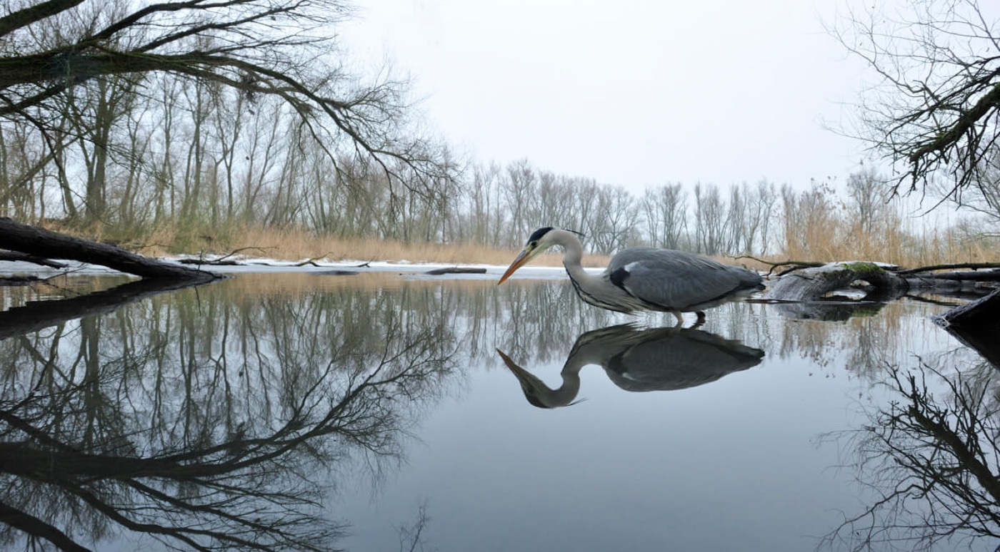

Nederland · Biesbosch
Een dag fotografie, helemaal voor jou
Een dag op pad met alle aandacht voor jouw fotografie.
Een dag op pad met alle aandacht voor jouw fotografie.
Een dag op pad met alle aandacht voor jouw fotografie. Tijdens deze privéworkshop stemt Marco het programma af op wat je wilt leren. Je kunt vragen stellen, technieken oefenen en direct bespreken wat je in je beelden ziet.
Varend door de Biesbosch zoek je naar de fotomomenten die zich onderweg aandienen. Er is ruimte voor landschappen, macro, vogels en creatieve natuurfotografie.
Doordat je met een klein gezelschap bent, kun je ook plekken bezoeken die voor een groep niet geschikt zijn.


Wil je meer weten over een workshop of fotoreis? Of wil je een foto bestellen? Stuur Marco de Paauw een WhatsApp-bericht.
+31 6 265 885 62
Stuur een WhatsApp-bericht